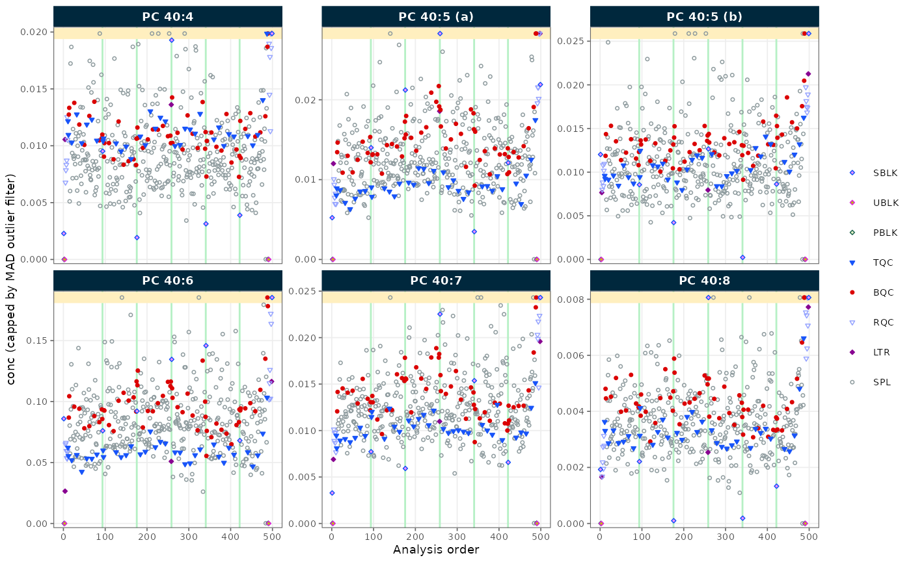
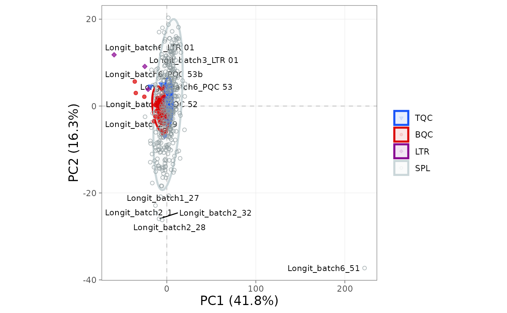

A basic MRMhub workflow
Source:vignettes/articles/tutorial-02-basic-workflow.Rmd
tutorial-02-basic-workflow.RmdMRMhub processes targeted mass-spectrometry data through an ordered sequence: import, metadata annotation, normalization, quantification, drift and batch correction, QC filtering, and export. This tutorial walks through that full sequence on a lipidomics dataset, using real file paths, an MSOrganiser metadata template, and a complete exported report. The examples are deliberately simplified; the Lipidomics data processing tutorial and the recipes cover dataset- and instrument-specific variations. After this tutorial you can set up a project, run the standard pipeline end to end, and export a QC-filtered report.
1. Set up a project
To start a new analysis, create an RStudio or Positron project (see Using RStudio Projects or the Positron User Guide). A predictable folder layout keeps raw data, results, and the processing notebook separate:
my_study/
├── data/ # raw data and metadata files
├── output/ # exported results
└── analysis.Rmd # your processing notebookAn R Notebook (.Rmd) or Quarto
(.qmd) document is a good home for a processing workflow:
it interleaves code with prose, documenting every decision. Load the
package to begin:
2. Create the experiment and import data
The MRMhubExperiment object is the central data
container in a MRMhub workflow (see The MRMhubExperiment object). We
create an empty object, then import peak-area data from an INTEGRATOR
output file; the file also carries some metadata (qc_type,
batch_id), which we import at the same time.
myexp <- MRMhubExperiment()
myexp <- import_data_mrmhub(
myexp,
path = "datasets/sPerfect_MRMhub.tsv",
import_metadata = TRUE)✔ Imported 499 analyses with 503 features.ℹ feature_area selected as default feature intensity. Modify with `set_intensity_var()`.✔ Analysis metadata associated with 499 analyses.✔ Feature metadata associated with 503 features.MRMhub reads several other formats; Import and prepare data files has a decision flowchart and the full importer reference.
3. Add metadata
Most processing steps need information absent from the data file: internal-standard assignments, calibrant concentrations, sample amounts. Metadata can come from separate CSV or Excel files, from R data frames (see Metadata import), or from an MSOrganiser template:
myexp <- import_metadata_msorganiser(
myexp,
path = "datasets/sPerfect_Metadata.xlsx",
ignore_warnings = TRUE)
Found no errors, 4 warnings, and no notes in the metadata.
----------------------------------------------------------------------------
Type Table Column Issue Count
1 W* Analyses analysis_id Analyses not in analysis data 15
2 W* Features feature_id Feature(s) without metadata 1
3 W* Features feature_id Feature(s) not in analysis data 4
4 W* ISTDs quant_istd_feature_id Internal standard(s) not used 1
----------------------------------------------------------------------------
E = Error, W = Warning, W* = Suppressed Warning, N = Note
----------------------------------------------------------------------------✔ Analysis metadata associated with 499 analyses.✔ Feature metadata associated with 502 features.✔ Internal Standard metadata associated with 17 ISTDs.✔ Response curve metadata associated with 12 annotated analyses.Validation checks may raise warnings, which by default halt the
import. Setting ignore_warnings = TRUE lets it proceed; the
warnings still appear in the console table, marked with an asterisk
(*) in the status column, and should be
reviewed so nothing critical is missed. Validating and fixing
metadata shows how to inspect and resolve them.
4. Process the data
With data and metadata in place, we run the core pipeline: normalize to internal standards, quantify, correct run-order drift and between-batch effects, and filter features on QC criteria.
myexp <- normalize_by_istd(myexp)
myexp <- quantify_by_istd(myexp)
myexp <- correct_drift_gaussiankernel(
myexp,
variable = "conc",
ref_qc_types = c("SPL"))
myexp <- correct_batch_centering(
myexp,
variable = "conc",
ref_qc_types = "SPL")
myexp <- filter_features_qc(
myexp,
include_qualifier = FALSE,
include_istd = FALSE,
min.signalblank.median.spl.sblk = 10,
max.cv.conc.bqc = 25)The drift and batch corrections here are fitted on the study samples
(ref_qc_types = "SPL"), which suits large, well-randomised
sample sets. Drift and batch
correction covers fitting on dedicated QC samples instead and how to
choose a method.
5. Visualize results
A run-scatter plot shows signal against injection order, a quick visual check on trends and correction quality. We plot a single lipid class here; Visualisation functions lists the full set of plots grouped by workflow stage.
plot_runscatter(
myexp,
variable = "conc",
include_feature_filter = "PC 4",
include_istd = FALSE,
cap_outliers = TRUE,
log_scale = FALSE,
output_pdf = FALSE,
path = "./output/runscatter_PC408_beforecorr.pdf",
cols_page = 3, rows_page = 2)
Figure 1. Run-scatter of PC concentrations by injection order after drift and batch correction.
6. Export and share
Finally, we export results for downstream analysis and archiving: a detailed Excel report capturing every table and QC metric, a flat CSV of just the QC-passing concentrations, and the serialized object holding the complete processing state.
save_report_xlsx(myexp, path = tempfile(fileext = ".xlsx"))
save_dataset_csv(
myexp,
path = tempfile(fileext = ".csv"),
variable = "conc",
qc_types = "SPL",
include_qualifier = FALSE,
filter_data = TRUE)
saveRDS(myexp, file = tempfile(fileext = ".rds"), compress = TRUE)Figures are exported with save_plot(), which writes any
plot at a defined size (in mm by default) and, given a path without an
extension, in several formats at once:
p <- plot_pca(myexp, variable = "conc")
save_plot(p, path = tempfile(), format = c("pdf", "png"), width = 180, height = 120)
The .rds file preserves the entire
MRMhubExperiment, so a colleague can open it in R and run
their own plots and QC checks, reproducing the exact data state without
re-running the pipeline.
Next steps
- Lipidomics data processing: a more detailed lipidomics example
- Drift and batch correction: correction methods and diagnostics
- Exploring QC: RunScatter and PCA: QC visualisation and outlier screening
- External calibration and QC: quantitation with calibration curves